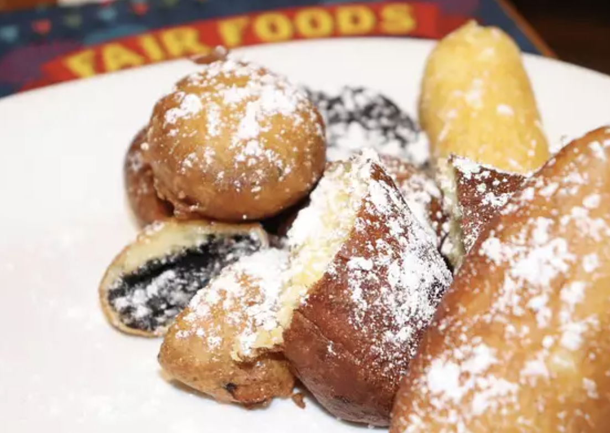

Deep Fried Oreos

Description
This is a carnival favorite where I grew up. Oreos get dipped into pancake
batter and fried - yummy!! You can do this with or without a deep fryer.
Ingredients
- 2 quarts vegetable oil for frying
- 1 large egg
- 1 cup milk
- 2 teaspoons vegetable oil
- 1 cup pancake mix
- 1 (18 ounce) package cream-filled chocolate sandwich
cookies (such as Oreo)
Steps
- Heat oil in deep-fryer to 375 degrees F (190 degrees C).
- Whisk together the egg, milk, and 2 teaspoons of vegetable oil in a
bowl until smooth. Stir in the pancake mix until no dry lumps remain. Dip the cookies
into the batter one at a time, and carefully place into the
hot frying oil. Fry only 4 or 5 at a time to avoid overcrowding the deep fryer. Cook until
the cookies are golden-brown, about 2 minutes. Drain on a paper towel-lined plate before serving.
Click here to go back to recipes.